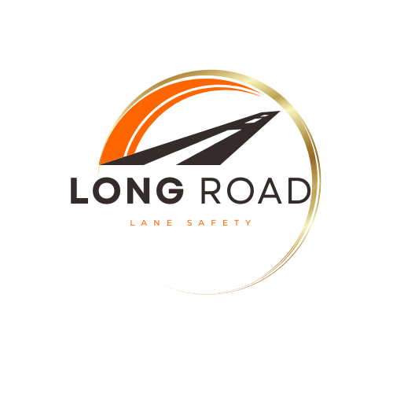
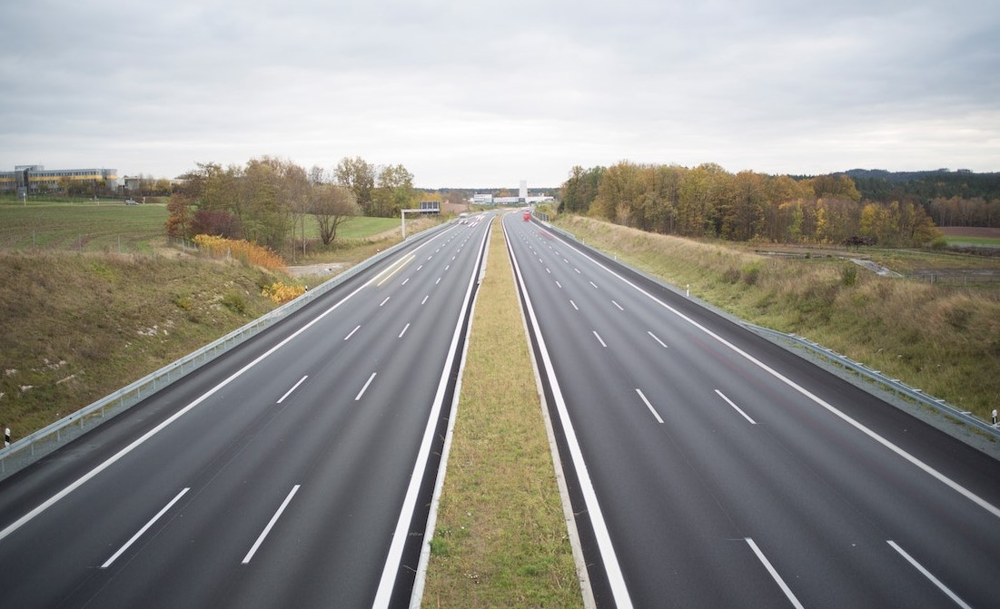
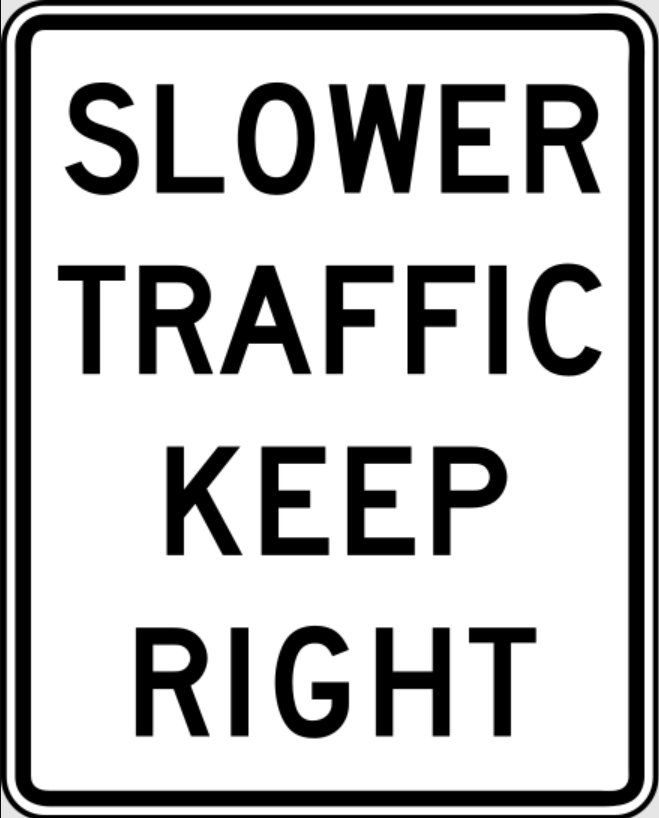
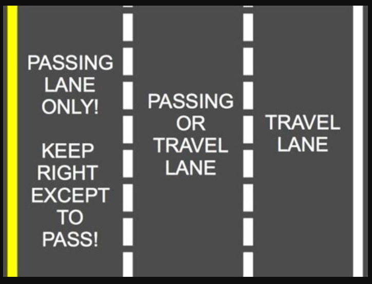

Overview
Many drivers in the United States are unaware of the dangers of "camping" in the left-lane on freeways. This practice of driving in the left lane without passing other vehicles not only goes against proper driving etiquette but also poses significant risks to road safety. The left lane is meant to be a passing-only lane, allowing for the smooth flow of traffic and minimizing congestion. By educating drivers about the importance of using the left lane appropriately, we can help create safer and more efficient driving conditions for everyone.
Purpose
The purpose of this website is to inform drivers about the laws regarding the "Passing-Only Lane" or the left lane on the freeway in each state. Long Road Company is dedicated to teaching drivers how to properly utilize the passing-only lane and understanding the penalties for violating these laws in the United States of America. It is crucial for drivers to be aware of their state's specific regulations to avoid causing major traffic accidents, raising insurance rates for others, and causing distress for fellow commuters. Through visual aids and informative instructions, our website aims to assist those who prioritize the well-being of others and themselves on the road. By knowing and following lane laws, drivers can become more considerate commuters and help alleviate tensions on the road.
Audience
The target market for this website is anyone who drives in America
Branding
Website Logo
Style Guide
Color Palette
Palette URL: https://coolors.co/ffffff-3e3736-fe6600-d4c079-256a0b| Primary | Secondary | Accent 1 | Accent 2 |
|---|---|---|---|
| [#396E94] | [#E7C24F] | [#A43312] | [#256a0b] |
Typography
Heading Font: [Actor]
Paragraph Font: [Roboto Flex]
Normal paragraph example
More fatal accidents are caused by inconsistent speeds and road rage. It's not about driving at excessive speeds, but rather about maintaining a consistent speed that aligns with the flow of traffic. This approach reduces the likelihood of accidents caused by speed differentials and mitigates road rage incidents. By understanding the importance of driving in sync with the flow of traffic, drivers can contribute to safer road conditions for everyone.
Colored paragraph example
More fatal accidents are caused by inconsistent speeds and road rage. It's not about driving at excessive speeds, but rather about maintaining a consistent speed that aligns with the flow of traffic. This approach reduces the likelihood of accidents caused by speed differentials and mitigates road rage incidents. By understanding the importance of driving in sync with the flow of traffic, drivers can contribute to safer road conditions for everyone.
Navigation
Site Map
Content
Home page
Paragraph 1: Overview: Many drivers in the United States are unaware of the dangers of "camping" in the left-lane on freeways. This practice of driving in the left lane without passing other vehicles not only goes against proper driving etiquette but also poses significant risks to road safety. The left lane is meant to be a passing-only lane, allowing for the smooth flow of traffic and minimizing congestion. By educating drivers about the importance of using the left lane appropriately, we can help create safer and more efficient driving conditions for everyone. Paragraph 2: Purpose: The purpose of this website is to inform drivers about the laws regarding the "Passing-Only Lane" or the left lane on the freeway in each state. Long Road Company is dedicated to teaching drivers how to properly utilize the passing-only lane and understanding the penalties for violating these laws in the United States of America. It is crucial for drivers to be aware of their state's specific regulations to avoid causing major traffic accidents, raising insurance rates for others, and causing distress for fellow commuters. Through visual aids and informative instructions, our website aims to assist those who prioritize the well-being of others and themselves on the road. By knowing and following lane laws, drivers can become more considerate commuters and help alleviate tensions on the road. Paragraph 3: Importance of Consistent Speeds and Road Rage More fatal accidents are caused by inconsistent speeds and road rage. It's not about driving at excessive speeds, but rather about maintaining a consistent speed that aligns with the flow of traffic. This approach reduces the likelihood of accidents caused by speed differentials and mitigates road rage incidents. By understanding the importance of driving in sync with the flow of traffic, drivers can contribute to safer road conditions for everyone.
Images for the Home page
[Page 2 - Providing State-Specific Laws]
One of the child pages on the website will focus on providing the "Passing-Only" lane laws for each state in the USA. Visitors can easily navigate to their respective state's law and gain a clear understanding of their responsibilities as drivers. By organizing the laws in an accessible format, the website ensures that drivers have the necessary information to comply with state regulations and promote safer driving practices. I will be referring to this webpage for many of the State laws:https://www.safe2drive.com/blog/Left-Lane-Driving-Laws-By-State
Images for the Page 2
 [Page 3 - Emphasizing the Benefits of Courteous Commuting ]
Child Page - Tips for Being a Courteous Commuter? This Child page can focus on providing practical tips for being a courteous commuter. This section will emphasize the importance of displaying considerate behavior on the road and offer guidance on how to achieve this. Topics covered may include allowing faster vehicles to pass, using turn signals appropriately, and maintaining a safe following distance. This child page can also provide tips and guidelines for merging onto highways and interstates, offer advice on merging safely, understanding the right-of-way rules, and maintaining appropriate speeds during the merging process. By educating drivers about effective merging techniques, the website helps reduce the risk of accidents and promotes smoother traffic flow. A key message that my website aims to convey is the importance of being a courteous commuter. To emphasize this point, a tagline such as "Don't be a Jerk" or "Don't be a Rager" could be used to capture attention and encourage drivers to reflect on their behavior. My website will emphasize that being a courteous driver benefits all road users and promotes a more enjoyable commuting experience.
Images for the Page 3
Wireframes
Create three wireframes for your site. One for each page and list them here
Home
[Any additional details about home that the wireframe does not make clear]
[Page 2]
[Any additional details about page 2 that the wireframe does not make clear]
[Page 3]
[Any additional details about page 3 that the wireframe does not make clear]